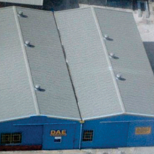

Our workshop
Local roots.
Precision workmanship.
Founded in 1967, Diesel & Auto Engineering serves vehicle owners and businesses from our Alton workshop, close to Richards Bay’s major car dealers.
We undertake automotive engineering and diesel fuel injection work, with a warranty on our workmanship.
Experience you can turn to
Parts, people
& precision.
Serving Richards Bay since 1967, D.A.E. brings together automotive engineering and diesel fuel injection services at our Alton workshop.
We offer a warranty on our workmanship and carry a range of service exchange engine components, including blocks, cylinder heads, crankshafts, con rods, diesel pumps and injectors.

